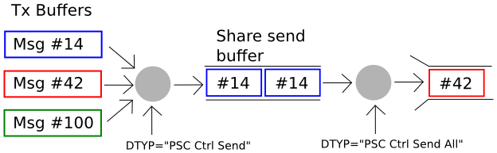

The PSC driver treats each TCP socket as a pair of independent streams (Tx and Rx). Thus the handling of messages in each case is separate. The Driver makes no association between (for example) a message id 5 which is sent, and one which is received.
The Driver maintains a list of message IDs for which some code is “interested”. Any code which will read the body bytes or reception time associated with a message ID is “interested”. Usually this will be an input Record.
For example, the following records are “interested” in message IDs #14, #42, and #100. ID #14 will be interpreted as an variable length array of 16-bit signed integers. ID #42 is one 32-bit integer register is a block of registers. ID #100 is a variable length ASCII string.
record(waveform, "$(P)wfin-I") {
field(DTYP, "PSC Block I16 In")
field(INP , "@$(NAME) 14")
field(SCAN, "I/O Intr")
field(FTVL, "DOUBLE")
field(NELM, "10")
}
record(longin, "$(P)regX-I") {
field(DTYP, "PSC Reg")
field(INP, "@$(NAME) 42 4") # msg 42, offset 4
field(SCAN, "I/O Intr")
}
record(stringin, "$(P)hear") {
field(DTYP, "PSC Block")
field(INP , "@test 100")
field(SCAN, "I/O Intr")
}
New messages are fully received (header and body) before any further processing. Once received, the message ID is compared against a list of “interesting” message IDs, and silently discarded if there is no match.
If it is “interesting”, the body bytes are moved to a per-message ID RX buffer. This is a persistent buffer containing the most recently received message (body bytes and reception time).
Each buffer (and thus each received message ID) has an associated EPICS “I/O Intr” scan list for use by records which will be processed each time a new message with that ID is received. There is also a list of callback functions which may be used as an extension point.
Some care is necessary with high message rates. Since messages are queued, and “I/O Intr” scanning is done on a different thread, it is possible for messages to be received at a higher rate then records scan. In this situation messages may be “lost” (not “seen” by any record). It is even for a message to be updated while a scan is in progress so that two records processed consecutively will see different message bodies.
However, it is not possible for a message to update while a single record is accessing. Such concurrent read/write operations to a single message buffer is prevented by a lock.
The Driver maintains a list of message IDs which some code may transmit. Tx buffers are used as an intermediate “scratch” space to construct new messages. This allows a message to be constructed using several EPICS records.
When ready, the scratch buffer message is queued to a shared send buffer (see DTYP=”PSC Ctrl Send”). The common buffer collects a number of complete messages. This may include several messages with the same message ID.
No bytes will be sent until the contents of the shared send buffer are moved to the socket send buffer (see DTYP=”PSC Ctrl Send All”).
